Work / Waste broker app
Case study · CRMs & integrationsWaste broker app.
The broker app behind Undisputed Waste Services. Every enquiry lands in one inbox, gets priced by sending a brief to suppliers, and is booked, tracked and costed through to a paid, profitable job.
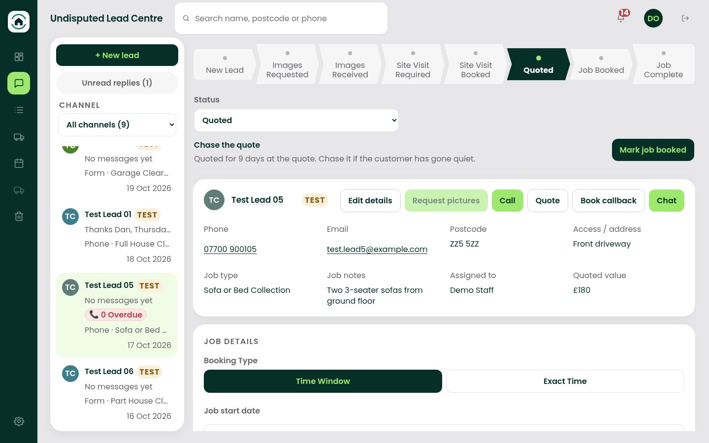
What needed solving.
Undisputed sells clearance and skip jobs and has them done by a network of suppliers. Enquiries came in on several channels, supplier prices were chased by phone, and nobody could see in one place what each job was quoted, what the supplier charged and what was left as profit.
- The office team, who reply to customers, brief suppliers and book jobs
- Suppliers, who open a private brief link and send their price
- The owner, who watches the pipeline, ad spend and profit per job
The software, screen by screen.
Every screen here is the real software, run on its own throwaway local database with made-up demo records (Demo Buyer Ltd, Demo Skips Ltd, Test Lead 01 and so on, example.com emails, ZZ postcodes and reserved 07700 900 test numbers). All outside services were blocked. Every figure is demo data, not a real price, spend or invoice.
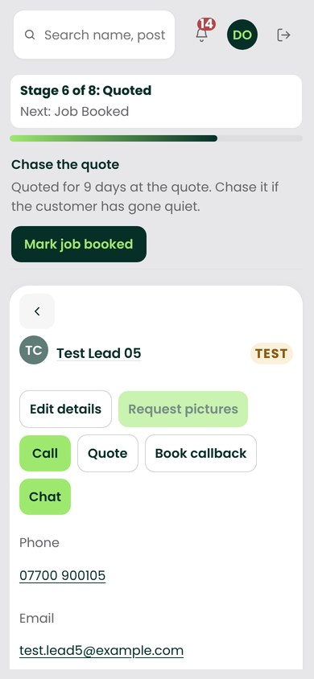
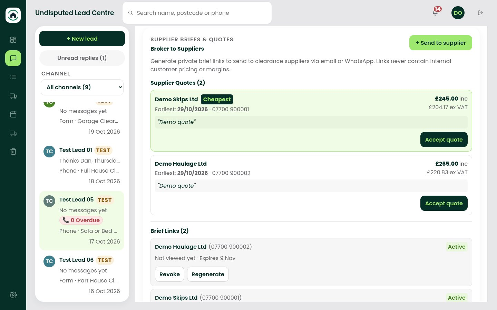
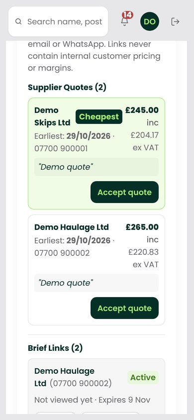
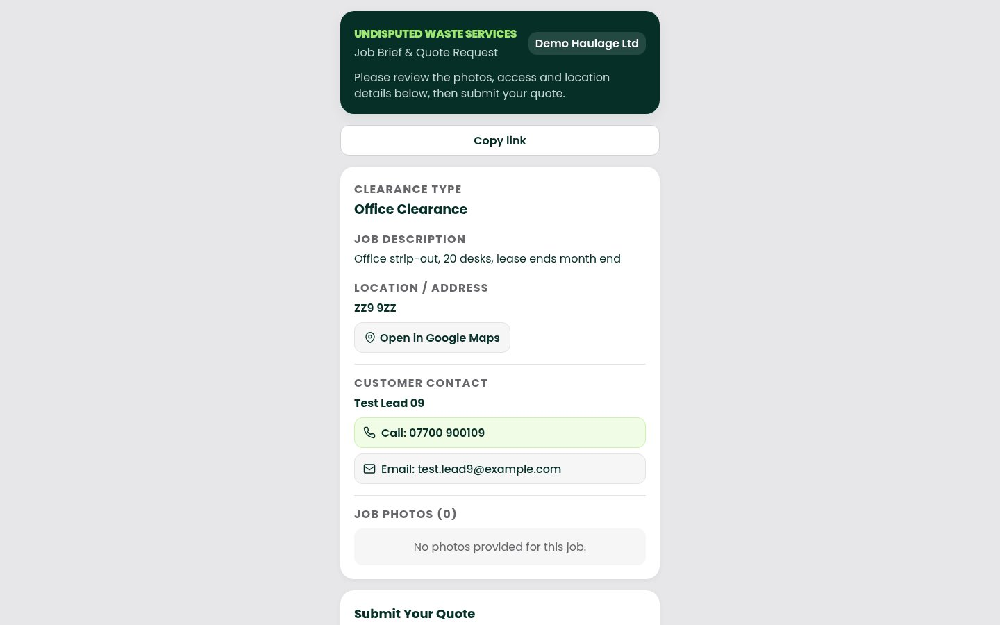
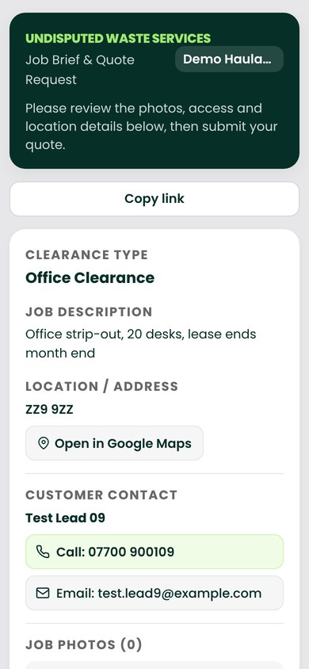
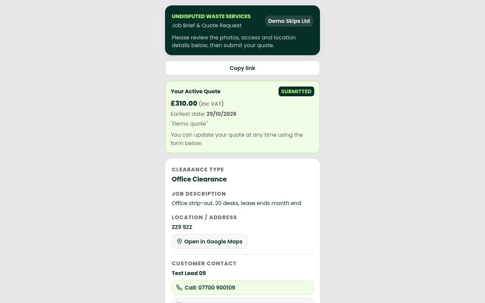
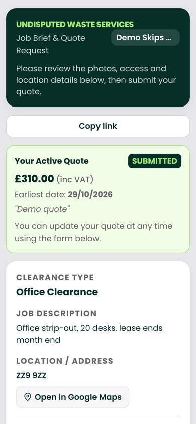
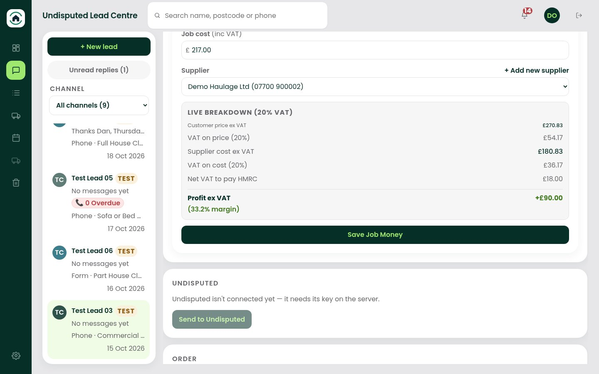
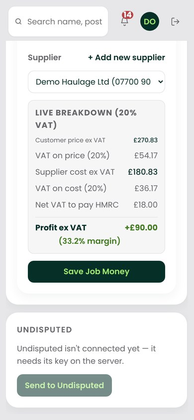
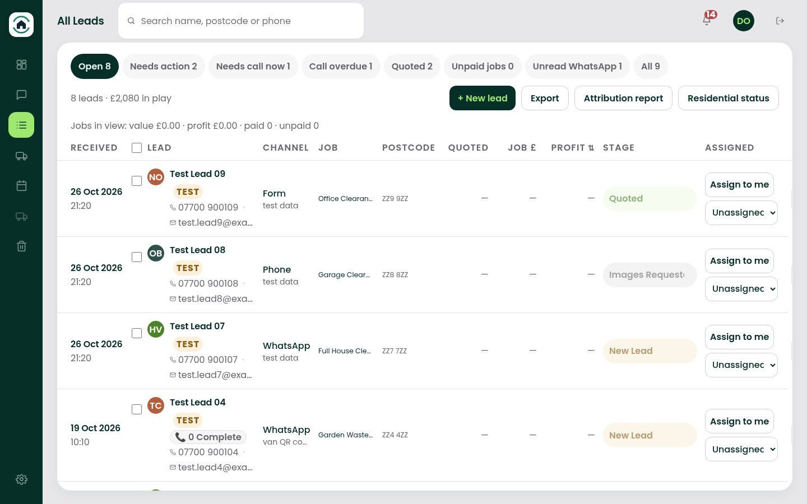
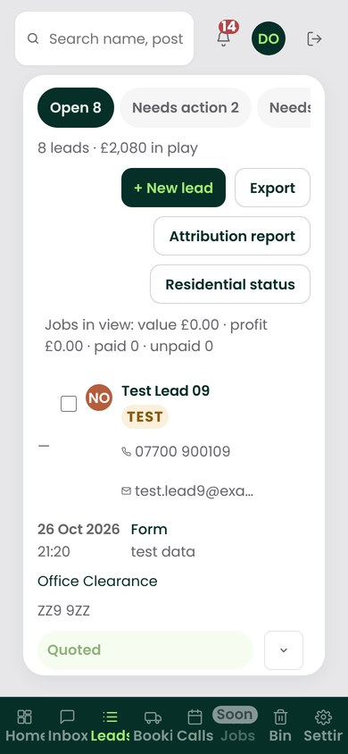
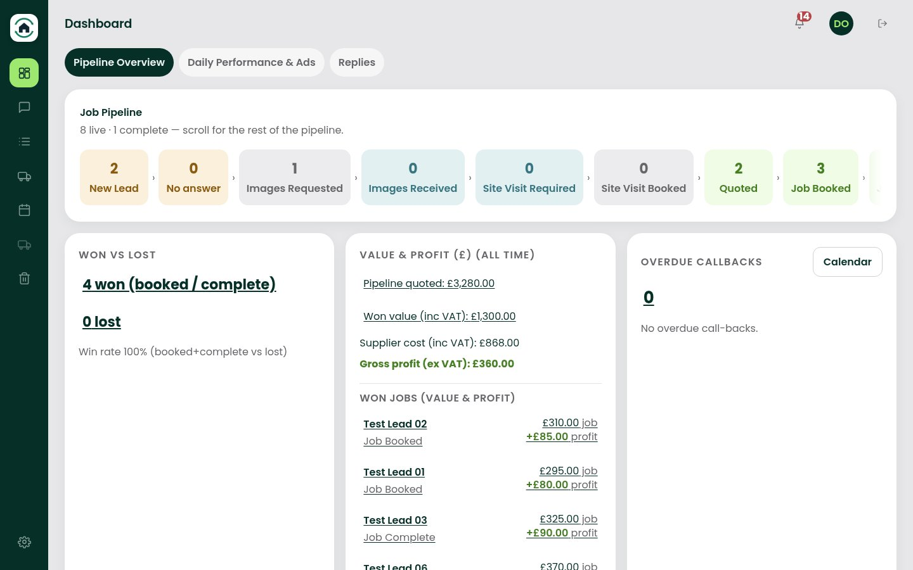
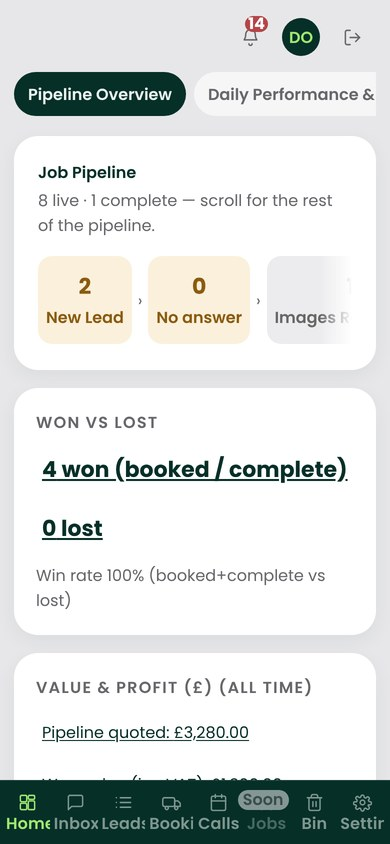
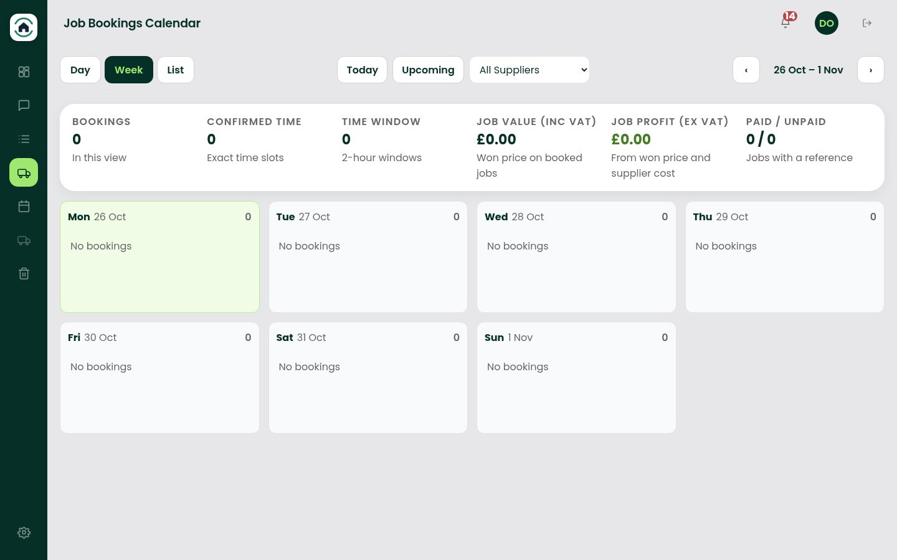
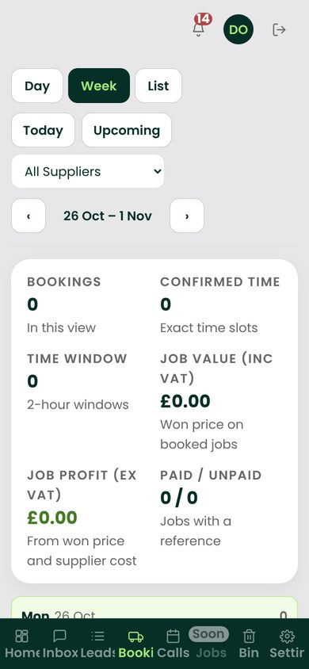
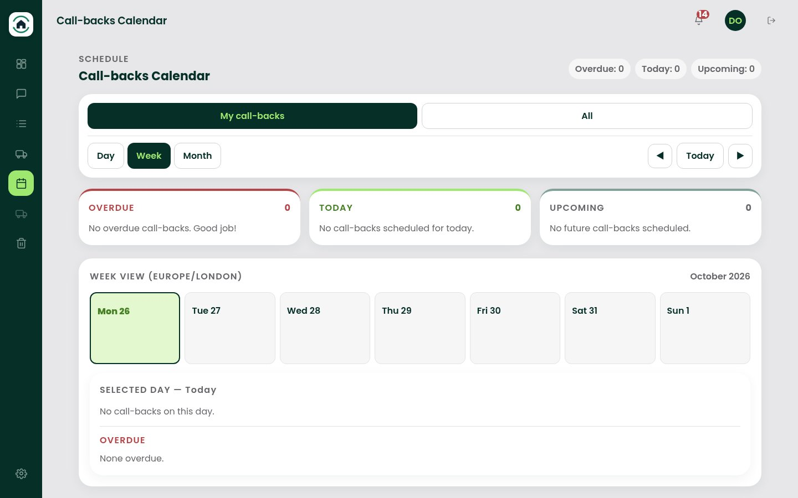
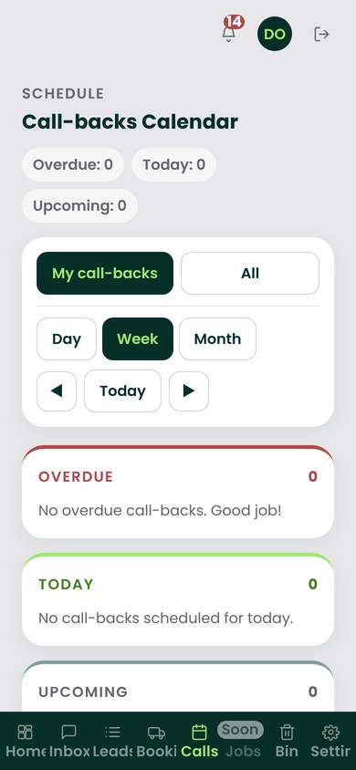
Workflows, integrations and stack.
Workflows & automations
- Website enquiries arrive through a signed intake API and become leads, with the ad source recorded
- Supplier briefs: private, expiring links per supplier, with quotes collected and compared in the lead
- Accepting a quote sets the supplier and cost on the job
- Won price and supplier cost give live profit per job, and payments are marked paid or unpaid
- Call-backs and bookings feed their own calendars
- Calls can be transcribed, with job details pulled out for staff to check
- Lead and booking events go to Meta from the server
Integrations
- WhatsApp and SMS through Twilio
- Calls and call logging through Aircall
- Email through Resend
- Meta Conversions API
- Google Ads API for daily spend
- The Undisputed website and Leadform as lead sources
Tech stack
- React, Vite and TypeScript on the front end
- Node.js and Express API
- PostgreSQL with Drizzle ORM and versioned migrations
- Front end on Vercel, API on Railway
How it was built and tested
- Built in small pull requests, each reviewed before merge
- Automated tests with Vitest plus Playwright end-to-end tests
- Every change gets a UX check on desktop and mobile, in Chromium and WebKit, against a throwaway database with fake data and all outside services stubbed
- Production is checked after every deploy, with a rollback ready
Outcomes
Results for this project will be published once the figures have been checked against our own data.
Lead generation Stato portal
Got a project in mind?
Tell us what you need to run better. We'll come back with how we'd build it.